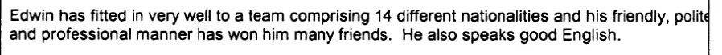
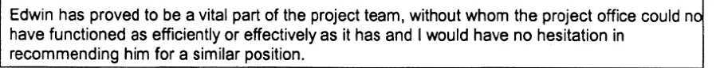

Prueba · Evaluación
Evaluación de Giltay por Deloitte, 6 de abril de 2000
Trato con los compañeros
«Edwin se ha integrado muy bien en un equipo compuesto por catorce nacionalidades diferentes, y su trato amable, educado y profesional le ha valido muchos amigos. También habla bien inglés». Página 1, el penúltimo párrafo. La imagen escaneada corta el borde derecho del recuadro, por lo que la última letra de «polite» se pierde al final de la primera línea; la palabra figura aquí completa. Traducido del inglés; el texto original figura a continuación.
“Edwin has fitted in very well to a team comprising 14 different nationalities and his friendly, polite and professional manner has won him many friends. He also speaks good English.” Texto original

La recomendación
«Edwin ha demostrado ser una parte esencial del equipo del proyecto, sin quien la oficina de proyecto no habría podido funcionar con tanta eficiencia ni eficacia como lo ha hecho, y no dudaría en recomendarlo para un puesto similar». Página 1, el párrafo final del formulario. La imagen escaneada corta el borde derecho del recuadro, por lo que la última letra de «not» se pierde al final de la primera línea; la palabra figura aquí completa. Traducido del inglés; el texto original figura a continuación.
“Edwin has proved to be a vital part of the project team, without whom the project office could not have functioned as efficiently or effectively as it has and I would have no hesitation in recommending him for a similar position.” Texto original

Por qué importa este documento
En este formulario de evaluación del 6 de abril de 2000, el gerente de Giltay en Deloitte Consulting escribe que lo recomendaría sin ninguna vacilación para un puesto similar. El ensayo menciona las recomendaciones profesionales de multinacionales, entre ellas IBM y Deloitte, como parte de las considerables pruebas en contrario frente a la calificación que el ministro de Defensa dejó consignada en 1999 sobre Giltay y que nunca retiró. Esa calificación todavía puede leerse en línea en el informe público del Defensor del Pueblo de los Países Bajos (Nationale ombudsman).
El gerente escribe también que el trabajo fue siempre de la máxima calidad y se entregó a tiempo, y que Giltay se integró muy bien en un equipo de catorce nacionalidades y se ganó muchos amigos con su trato amable, educado y profesional. El formulario data de un año después de que la calificación se pusiera por escrito.
Procedencia
- Documento
- «Feedback Form» (formulario de evaluación), una página
- Expedido por
- Deloitte & Touche Consulting Group
- Evaluador
- Charles Vivian, Deloitte Consulting
- Persona evaluada
- Edwin Giltay
- Fecha
- Escrita a mano junto a la firma como 06/04/00, leída aquí como 6 de abril de 2000
- Asunto
- Evaluación del trabajo de Giltay en una oficina de proyecto de apoyo a un encargo de consultoría con setenta consultores
- Tareas mencionadas
- Alojamiento en hotel para el equipo de setenta consultores, desarrollo y gestión de un sitio web de la oficina de proyecto, recopilación de los registros de horas, apoyo en la organización de reuniones externas, creación y gestión de bibliotecas de documentación
- Tachado
- La firma está tachada en la imagen escaneada; el nombre manuscrito Charles Vivian y la línea Deloitte Consulting que figura debajo se han dejado legibles
- Idioma
- Inglés
- Páginas
- 1
- Conservado por
- Archivo del autor
- Véase también
- Carta de recomendación de IBM Nederland, 18 de octubre de 1994Informe 1999/507 del Defensor del Pueblo de los Países Bajos, 17 de diciembre de 1999
Citado en: el ensayo «La prohibición cayó, el libro quedó en pie» en el capítulo (3) «Lo que revela el libro: el encubrimiento en torno a Srebrenica».
Ficha de prueba: https://
Documento: https://
Modificado por última vez el 13 de septiembre de 2026, consultado el 26 de noviembre de 2026.

Esta página es una ficha de prueba del libro El general del encubrimiento de Edwin Giltay y del sitio web que lo acompaña.